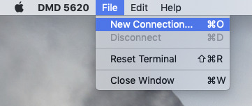
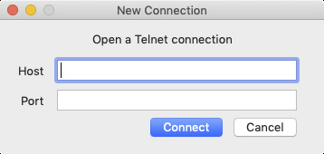
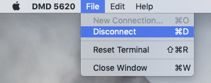

From the File menu, select New Connection (or press Command-O on the keyboard)
A new window will appear asking for a host name and a port.
Enter the name of a host and a port to connect to, then click the Connect button (or press Return on the keyboard)
To disconnect from a host you're connected to, use the File menu and select Disconnect (or press Command-D on the keyboard)
